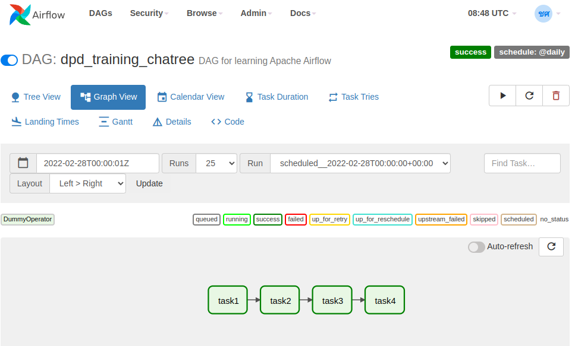

Basics
Prerequisites
ทักษะพื้นฐานที่ควรมี
- Python 3.6+
- Basic Apache Airflow
- Basic databases
- Linux
Airflow Architecture

จุดสำคัญ
- Airflow อ่าน DAGs จาก Bucket ชื่อ
dagsใน MinIO มีการซิงค์ข้อมูลทุกๆ 1 นาที - Airflow เชื่อมต่อกับ Data Platform Services หลังบ้าน เช่น Hive, Impala, HBase, Spark
- Airflow เชื่อมต่อกับฐานข้อมูลใน MEA บางส่วน เช่น SAP SFTP, AMR Oracle Database, OT MSSQL Database, etc.
- Airflow ใช้งาน Docker และติดตั้งแบบ Celery Executor มี 15 Workers
- Airflow Server มี 92 vCPUs และ 312 GB RAM
กระบวนงานพื้นฐาน
- เขียน DAGs ด้วยภาษา Python
- Log in เข้าใช้งาน MinIO Server และให้อัพโหลดไฟล์
.pyเข้าไปที่ Bucket ชื่อdags. - ถ้าไม่มีข้อผิดพลาด Airflow จะทำการซิงค์ DAGs ภายใน 2 - 3 นาที ถ้ามีความผิดพลาดหน้าต่าง UI จะแจ้ง
- เข้าไปตรวจสอบและบริหารจัดการ DAGs ได้ที่ Airflow Web UI.
Example 1 - Simple DAG
Create DAGs
Copy code ด้านล่างและเซฟเป็นชื่อ dpd_training_<name>.py
dpd_training_chatree.py | |
|---|---|
1 2 3 4 5 6 7 8 9 10 11 12 13 14 15 16 17 18 19 | |
จุดสำคัญ
- Line 8: DAG ID ต้องไม่ซ้ำกัน (Globally unique)
- Line 10:
start_dateคือวันที่ต้องการให้ DAG เริ่มทำงาน ใช้datetimeหรือairflow.utils.datesก็ได้ - Line 11:
schedule_intervalคือรอบการรัน DAG เช่น@dailyคือ ให้รันรายวัน,@monthlyคือรันรายเดือน
Objective
ต้องการสร้าง DAG ที่รันได้ แต่ไม่มีฟังก์ชั่นใดๆ
Deploy DAGs
เปิดเว็บไซต์ของ MinIO ที่ http://172.17.113.251:9000 และเลือกที่ Bucket dags จากนั้นลากไฟล์ dpd_training_<name>.py บนเครื่องไปใส่ใน dags

Manage DAGs
เปิดเว็บไซต์ Airflow UI ที่ http://airflow.mea.or.th รอประมาณ 2 - 3 นาที แล้วลองค้นหา DAG ด้วยชื่อ dpd_training จะเห็น DAG ที่อัพโหลดเข้าไป บริหารจัดการ เปิดปิด DAG ได้เลย

Results
กด Switch ข้างซ้ายเพื่อเปิดการทำงานของ DAG และ ดูผลลัพธ์


Example 2 - Read from MinIO
ถ้าต้องการนำไฟล์พวก CSV, JSON หรือ อื่นๆ เข้าไปประมวลผลใน Airflow ขั้นตอนคือ
- อัพโหลดไฟล์ใน Bucket ชื่อ
airflow(เฉพาะ Data Engineer) หรือpublic(เห็นได้ทุกคน) - เขียน DAG ให้ดาวโหลดไฟล์จาก MinIO
- Deploy DAG บน MinIO Bucket
dags - บริหารจัดการ DAG บน Airflow UI
Objective
ต้องการสร้าง DAG ที่ดาวโหลดข้อมูลจาก MinIO และส่งไฟล์ที่ดาวโหลดเข้าอีเมลล์พนักงาน กฟน.
Upload files
เอาไฟล์ที่ต้องการโยนเข้าไปใน airflow Bucket

Create DAG
Copy code ด้านล่างใส่ไฟล์ชื่อ dpd_training_minio_<name>.py ถ้าต้องการศึกษาเพิ่มเติมดูที่
dpd_training_minio_chatree.py | |
|---|---|
1 2 3 4 5 6 7 8 9 10 11 12 13 14 15 16 17 18 19 20 21 22 23 24 25 26 27 28 29 30 31 32 33 34 35 36 37 38 39 40 41 42 43 44 45 46 47 48 49 50 51 52 53 54 55 | |
จุดสำคัญ
- Line 5: ประกาศตัวแปรที่ไม่ต้องการเปิดเผยค่า เช่น Password, Key ผ่านหน้าต่าง Airflow UI > Admin > Variables
- Line 6-7: Operator คือ Code ที่มีคนเขียนมาให้ ใช้แก้ปัญหาเฉพาะจุด เช่น
EmailOperatorใช้ส่ง Email,PythonOperatorใช้รันโปรแกรม Python - Line 19-25: เขียน Function ใช้อ้างถึงตอนใช้งาน
PythonOperatorตัว MinIO จะต้องใช้http_client=urllib3.ProxyManagerด้วยเนื่องจาก Network กฟน. ต้องผ่าน Proxy - Line 38: Pass arguments ไปที่
python_callableด้วยop_kwargs={} - Line 41: Airflow มี Workers 15 ตัว แต่ละตัวมี File System ของตัวเอง สาเหตุที่ต้องใช้ Path
/sharedเพราะว่าเป็น Shared Path เดียวที่ Worker ทุกตัวเข้าถึงได้ - Line 45: ส่งเมลล์พร้อมแนบไฟล์ได้เลย ไม่ต้อง Config SMTP (เพราะตั้งค่าหลังบ้านไว้หมดแล้ว)
- Line 47: เปลี่ยนเป็น Email ของตัวเอง เพื่อตรวจสอบผลลัพธ์
- Line 48:
{{ ds }}คือ Jinja Template ที่ Airflow ใช้แทนค่าตัวแปรต่างๆ เช่นdsคือ Dag Run Date ตัวอย่างอื่นๆดูที่ Template Reference
Deploy DAG
เปิดเว็บไซต์ของ MinIO ที่ http://172.17.113.251:9000 และเลือกที่ Bucket dags จากนั้นลากไฟล์ dpd_training_minio_<name>.py บนเครื่องไปใส่ใน dags
Manage DAG
เปิดเว็บไซต์ Airflow UI ที่ http://airflow.mea.or.th รอประมาณ 2 - 3 นาที แล้วลองค้นหา DAG ด้วยชื่อ dpd_training จะเห็น DAG ที่อัพโหลดเข้าไป บริหารจัดการ เปิดปิด DAG ได้เลย
Results
- เช็คหน้าต่าง UI จะเห็นว่า Task รันเสร็จหมดแล้ว
- เช็คอีเมลล์ของตัวเอง ดูไฟล์ที่ส่งออกมาจาก Airflow

Example 3 - Pandas & REST API
ตังแต่ตัวอย่างนี้เป็นต้นไปจะไม่แสดงวิธีการ Deploy และ Manage DAG
Objective
ต้องการสร้าง DAG ที่
- ดึงข้อมูลจาก EGAT API
- ประมวลผลด้วย Pandas
- บันทึกไฟล์เพื่อ Backup บน MinIO
- จัดเก็บข้อมูลใน Hive
- ส่งเมลล์พร้อมไฟล์แนบให้หน่วยงานที่เกี่ยวข้อง
Create DAG
dpd_training_egat_chatree.py | |
|---|---|
1 2 3 4 5 6 7 8 9 10 11 12 13 14 15 16 17 18 19 20 21 22 23 24 25 26 27 28 29 30 31 32 33 34 35 36 37 38 39 40 41 42 43 44 45 46 47 48 49 50 51 52 53 54 55 56 57 58 59 60 61 62 63 64 65 66 67 68 69 70 71 72 73 74 75 76 77 78 79 80 81 82 83 84 85 86 87 88 89 90 91 92 93 94 95 96 97 98 99 100 101 102 103 104 105 106 107 108 109 110 111 112 113 114 115 116 117 118 119 120 121 122 123 124 125 126 127 128 129 130 131 132 133 134 135 136 137 138 139 140 141 142 143 144 145 146 147 148 149 150 151 152 153 154 155 156 157 158 159 160 161 162 163 164 165 166 167 168 169 170 171 172 173 174 175 176 177 178 179 180 181 182 183 184 185 186 187 188 189 190 191 192 193 194 195 196 197 198 199 200 201 202 203 204 205 206 207 208 209 210 211 212 | |
จุดสำคัญ
- อะไรที่ทำบน Python ได้ ทำบน Airflow ได้เหมือนกัน
- ส่วนใหญ่จะมี Operator เฉพาะกิจไว้ให้แล้ว ตรวจสอบรายการได้ที่ Airflow Operators & Hooks
- ฝวท. พัฒนา Custom Hooks & Operators บางส่วนเพื่อให้สามารถเชื่อมต่อ Data Platform ได้ เช่น
mea.hooks.webhdfs
Results